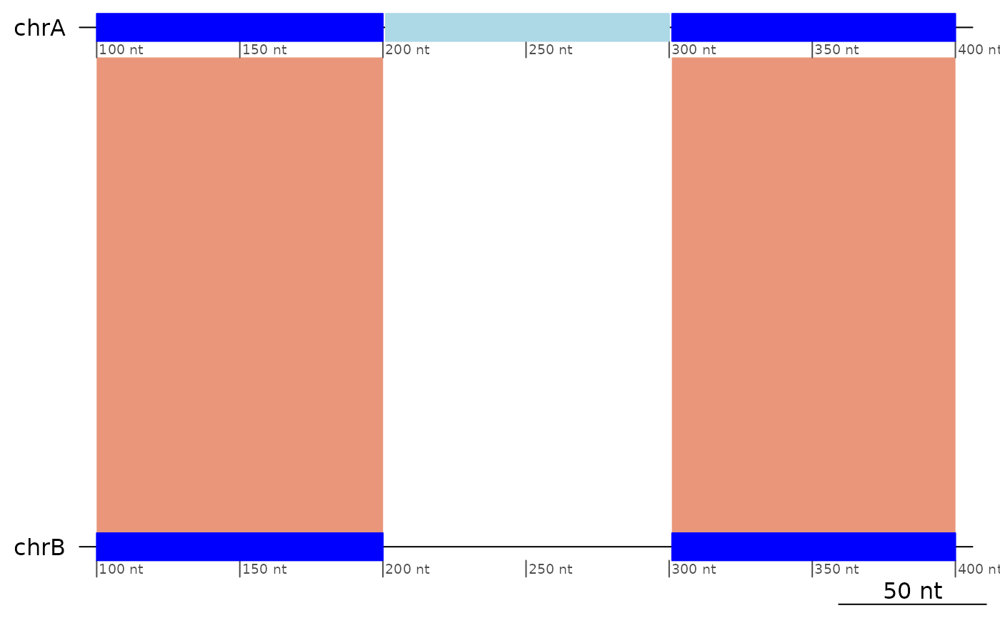

Flag ranges that start a triplet that would be colinear if the central pair were colinear, and that are not an inversion.
Arguments
- gb
A
GBreaks()object.- tol
Tolerance window for the distance between two ranges.
- both
Flag both the target and query ranges.
Details
The result of the flagging differs if the target and query ranges are swapped. Therefore, by default this function will search for translocations on both cases, and flag both ranges.
Here is a trivial example of a translocation:
┌──────────────┬──────────────┬──────────────┐
│ chrA:101-200 │ chrA:201-300 │ chrA:301-400 │ (Target genome)
└──────────────┴──────────────┴──────────────┘
+ + + (Alignment direction)
┌──────────────┬──────────────┬──────────────┐
│ chrB:101-200 │ chrC:201-300 │ chrB:301-400 │ (Query genome)
└──────────────┴──────────────┴──────────────┘See also
Other Flagging functions:
flagAll(),
flagColinearAlignments(),
flagDoubleInversions(),
flagInversions(),
flagLongShort(),
flagPairs(),
flagTwinInversions()
Other Translocation functions:
filterTranslocations(),
removeTranslocations(),
showTranslocations()
Other Structural variants:
StructuralVariants,
flagDoubleInversions(),
flagInversions(),
flagPairs(),
flagTwinInversions(),
plotApairOfChrs()
Examples
flagTranslocations(exampleTranslocation)
#> GBreaks object with 3 ranges and 2 metadata columns:
#> seqnames ranges strand | query tra
#> <Rle> <IRanges> <Rle> | <GRanges> <Rle>
#> [1] chrA 100-200 + | chrB:100-200 TRUE
#> [2] chrA 201-300 + | chrC:201-300 FALSE
#> [3] chrA 301-400 + | chrB:301-400 FALSE
#> -------
#> seqinfo: 1 sequence from an unspecified genome
flagTranslocations(exampleTranslocation2)
#> GBreaks object with 3 ranges and 2 metadata columns:
#> seqnames ranges strand | query tra
#> <Rle> <IRanges> <Rle> | <GRanges> <Rle>
#> [1] chrA 100-200 + | chrB:100-200 TRUE
#> [2] chrA 201-300 - | chrC:201-300 FALSE
#> [3] chrA 301-400 + | chrB:301-400 FALSE
#> -------
#> seqinfo: 1 sequence from an unspecified genome
plotApairOfChrs(exampleTranslocation)

flagTranslocations(exampleDeletion)
#> GBreaks object with 3 ranges and 2 metadata columns:
#> seqnames ranges strand | query tra
#> <Rle> <IRanges> <Rle> | <GRanges> <Rle>
#> [1] chrA 100-200 + | chrB:100-200 TRUE
#> [2] chrA 201-300 + | chrC:401-500 FALSE
#> [3] chrA 301-400 + | chrB:201-300 FALSE
#> -------
#> seqinfo: 1 sequence from an unspecified genome
flagTranslocations(exampleInsertion)
#> GBreaks object with 3 ranges and 2 metadata columns:
#> seqnames ranges strand | query tra
#> <Rle> <IRanges> <Rle> | <GRanges> <Rle>
#> [1] chrA 100-200 + | chrB:100-200 FALSE
#> [2] chrA 201-300 + | chrB:301-400 FALSE
#> [3] chrC 401-500 + | chrB:201-300 FALSE
#> -------
#> seqinfo: 2 sequences from an unspecified genome
flagTranslocations(exampleInsertion |> swap(sort = TRUE))
#> GBreaks object with 3 ranges and 2 metadata columns:
#> seqnames ranges strand | query tra
#> <Rle> <IRanges> <Rle> | <GRanges> <Rle>
#> [1] chrB 100-200 + | chrA:100-200 TRUE
#> [2] chrB 201-300 + | chrC:401-500 FALSE
#> [3] chrB 301-400 + | chrA:201-300 FALSE
#> -------
#> seqinfo: 1 sequence from an unspecified genome
flagTranslocations(exampleInsertion) |> swap(sort = TRUE)
#> GBreaks object with 3 ranges and 2 metadata columns:
#> seqnames ranges strand | tra query
#> <Rle> <IRanges> <Rle> | <Rle> <GRanges>
#> [1] chrB 100-200 + | TRUE chrA:100-200
#> [2] chrB 201-300 + | FALSE chrC:401-500
#> [3] chrB 301-400 + | FALSE chrA:201-300
#> -------
#> seqinfo: 1 sequence from an unspecified genome
flagTranslocations(sort(reverse(exampleDeletion)))
#> GBreaks object with 3 ranges and 2 metadata columns:
#> seqnames ranges strand | query tra
#> <Rle> <IRanges> <Rle> | <GRanges> <Rle>
#> [1] chrA 201-300 - | chrB:201-300 TRUE
#> [2] chrA 301-400 - | chrC:401-500 FALSE
#> [3] chrA 401-501 - | chrB:100-200 FALSE
#> -------
#> seqinfo: 1 sequence from an unspecified genome
flagTranslocations(exampleInversion)
#> GBreaks object with 3 ranges and 2 metadata columns:
#> seqnames ranges strand | query tra
#> <Rle> <IRanges> <Rle> | <GRanges> <Rle>
#> [1] chrA 100-190 + | chrB:100-190 FALSE
#> [2] chrA 210-291 - | chrB:210-291 FALSE
#> [3] chrA 301-400 + | chrB:301-400 FALSE
#> -------
#> seqinfo: 1 sequence from an unspecified genome
flagTranslocations(exampleColinear3)
#> GBreaks object with 3 ranges and 2 metadata columns:
#> seqnames ranges strand | query tra
#> <Rle> <IRanges> <Rle> | <GRanges> <Rle>
#> [1] chrA 100-200 + | chrB:100-200 FALSE
#> [2] chrA 201-300 + | chrB:201-300 FALSE
#> [3] chrA 301-400 + | chrB:301-400 FALSE
#> -------
#> seqinfo: 1 sequence from an unspecified genome